Grape · Since 1959
Grape · Since 1959This is an endless bliss! Bovonto has owned millions of hearts for its unique taste — a symphony of flavour that has delighted palates since 1959, crafting moments of pure joy in every sip.
A timeless embodiment of taste and tradition, Kalimark Bovonto flies at the zenith among its competitors. “Son of the South” would suit it best. A non-caffeinated, grapy, fizzy soft drink.
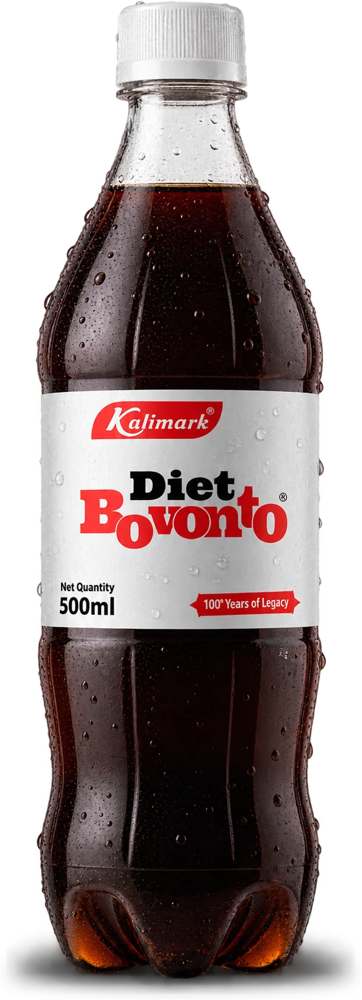
Grape · DietEverything Bovonto is loved for — the grape burst, the fizz, the Southern swagger — in a diet bottle.
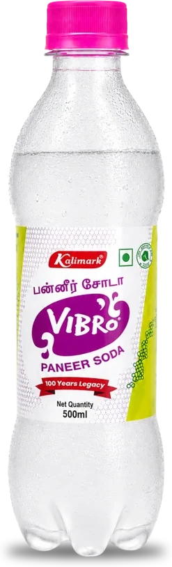
Rose · Paneer SodaSip into bliss with Vibro — a symphony of vibrant roses in a non-caffeinated, fizzy embrace.
Let each effervescent bubble whisper the language of love, turning every moment into a beautiful celebration of flavour and joy.
 Rose · Diet
Rose · DietVibro's rose-scented paneer soda, in a diet bottle — the same floral finish with a lighter touch.
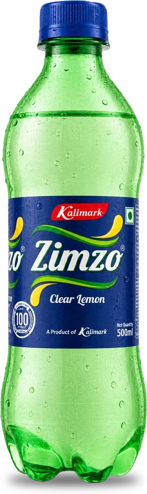
Clear LemonQuench your thirst with Zimzo Lemon! Experience the burst of fresh citrus goodness that breathes new life into every sip.
Elevate your refreshment game with this zingy delight — refreshment redefined.
Oranges in PET bottles! And that's called Tigo. Give yourself an orangy bonanza with Tigo — the orangy delight you shouldn't miss!
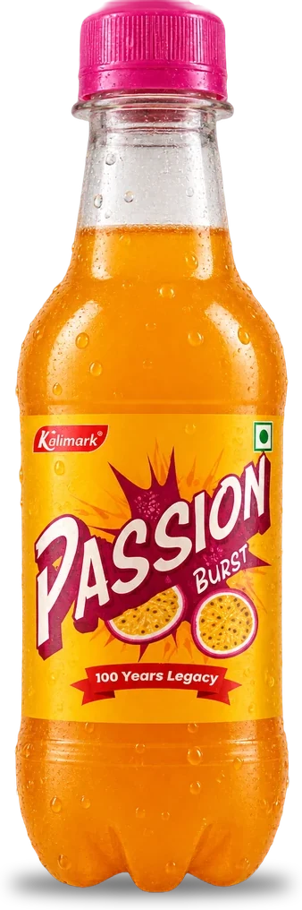
Passion FruitIndulge in the vibrant burst of Passion Burst — a tangy passion fruit fizzy drink that's a symphony of flavour in every bubble.
Elevate your refreshment with the exotic allure of passion fruit, promising a sip of pure delight.
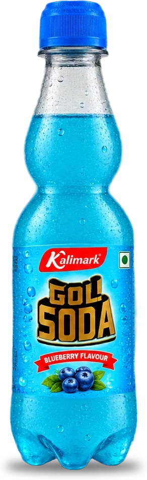
Marble-neck SodaJourney into nostalgia with Goli Soda's timeless charm and modern flair.
Experience the effervescence of beloved flavours like Orange, Lychee, Blueberry, Lemon and Lime — a symphony of taste that refreshes both the palate and memories.
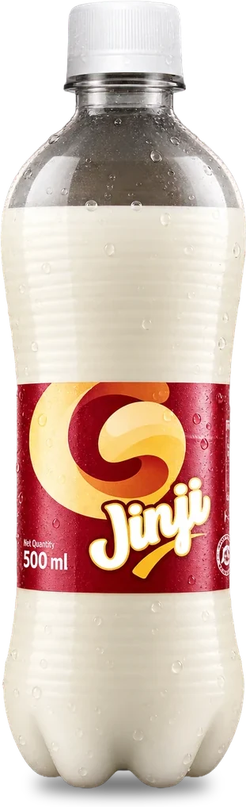
Ginger SodaSpice up your moments with Jinji — ginger-flavoured soda! A burst of zesty goodness in every sip, refreshing like no other.
Why settle for ordinary when you can elevate your refreshment experience with Jinji?
Indulge in the timeless allure of Frutang, a mango elixir born in 1978.
Sip on decades of perfection in every drop, where the essence of ripe mangoes meets a legacy of exquisite taste.
Quench your thirst with Kalimark Kalikola, a refreshing cola drink that combines bold, bubbly goodness with a burst of timeless flavour.
Experience the classic taste that defines refreshment, perfectly crafted for moments of joy.
Awaken your taste buds with Kalimark Cloudy Lemon, a robust and zesty lemon drink that packs a punch of citrusy freshness.
Savour the intense burst of tangy flavour in every sip, delivering a refreshing experience that's truly invigorating.
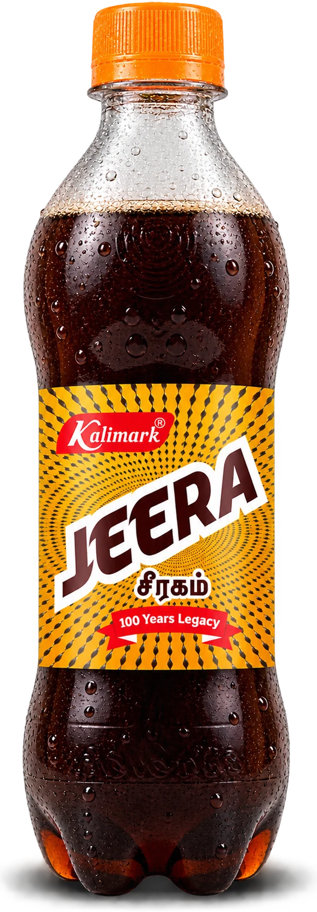
Cumin SodaQuench your thirst with Kalimark Jeera Soft Drink, a refreshing blend of natural cumin flavour and fizzy delight.
Experience the perfect harmony of spice and sweetness in every sip — a unique and invigorating beverage for a taste that stands out.
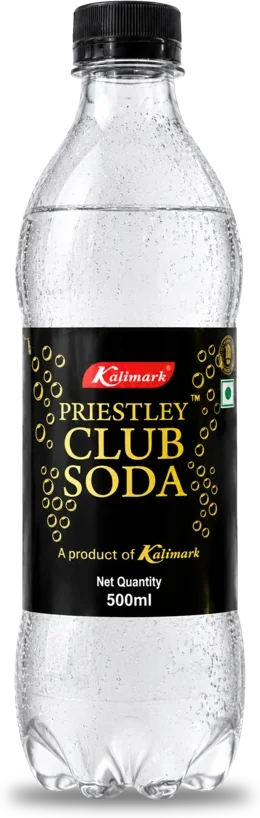
Club SodaExperience effervescent bliss with Kalimark's Priestley Club Soda — a sparkling elixir that transcends refreshment.
Immerse yourself in the crisp, invigorating bubbles, curated to elevate every moment to a celebration of pure, timeless joy.
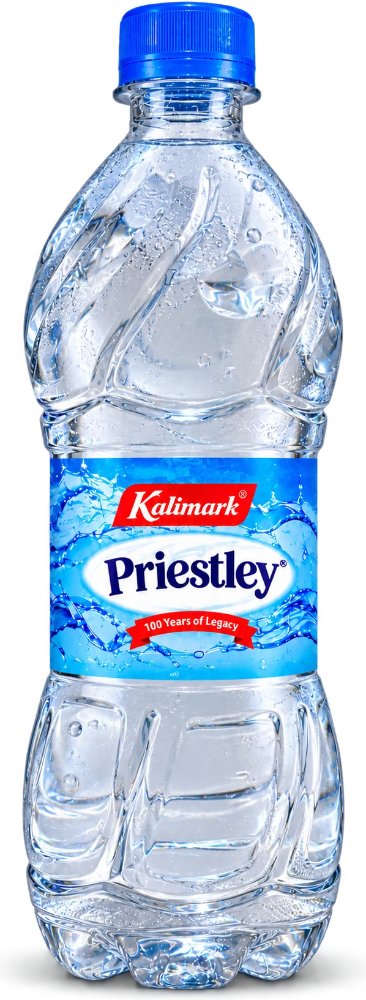
Packaged Drinking WaterKalimark Priestley water — a pristine sip of purity that hydrates and refreshes.
Straight from the source to your bottle, experience the crisp taste of clean, premium water for a revitalising hydration experience.
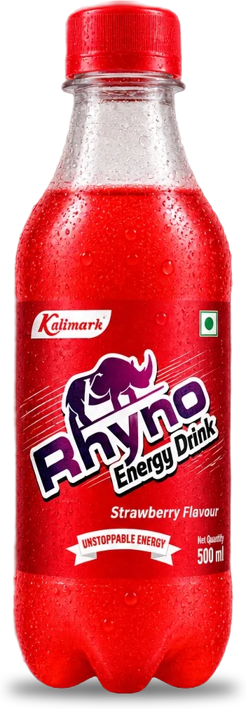
Energy DrinkKalimark's Rhyno Energy Drink offers a revitalising boost with a burst of flavours.
Choose invigorating Strawberry or refreshing Blueberry for a unique and energising experience.
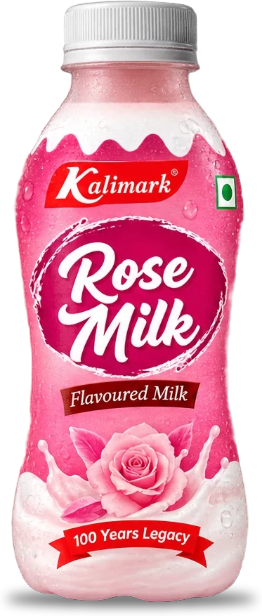
Four FlavoursImmerse yourself in the delightful taste of Kalimark's Flavoured Milk range — the rich and creamy goodness of Vanilla, the floral delight of Rose, the nutty allure of Almond, and the irresistible Choco Blast.
Each sip is crafted for your enjoyment. Embark on a journey of indulgence with our luscious and diverse selection of premium flavoured milks.
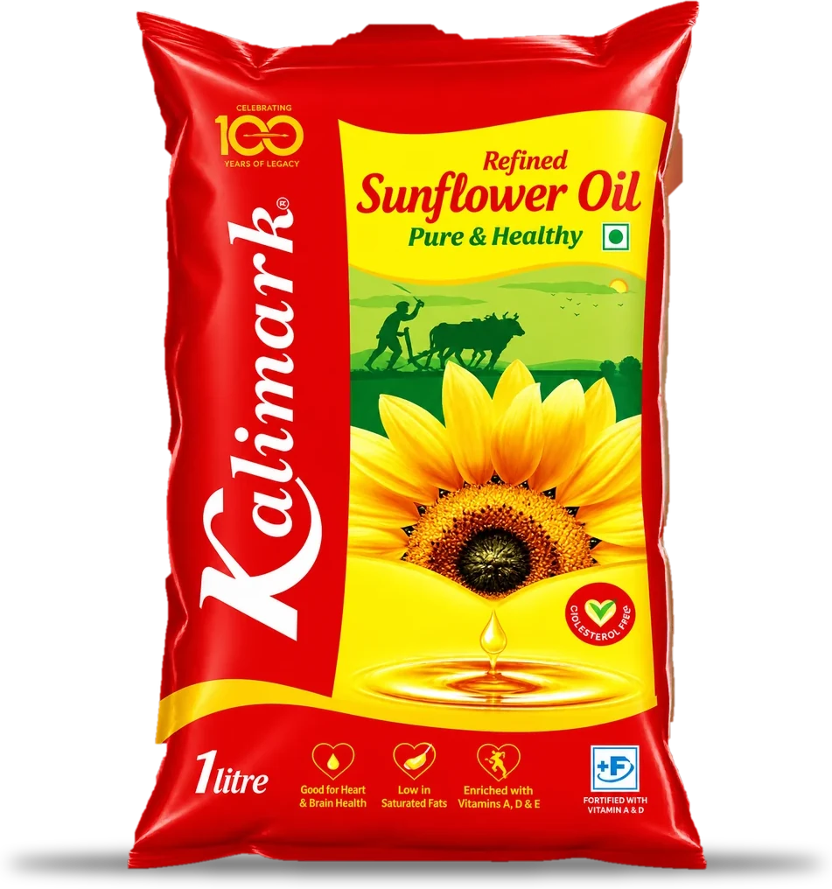
Kalimark Foods · 1 litreKalimark refined sunflower oil is a good choice for your kitchen: it is rich in unsaturated fats, particularly linoleic acid (omega-6), and vitamin E, an antioxidant.
Its high smoke point makes it versatile for frying, sautéing and baking.
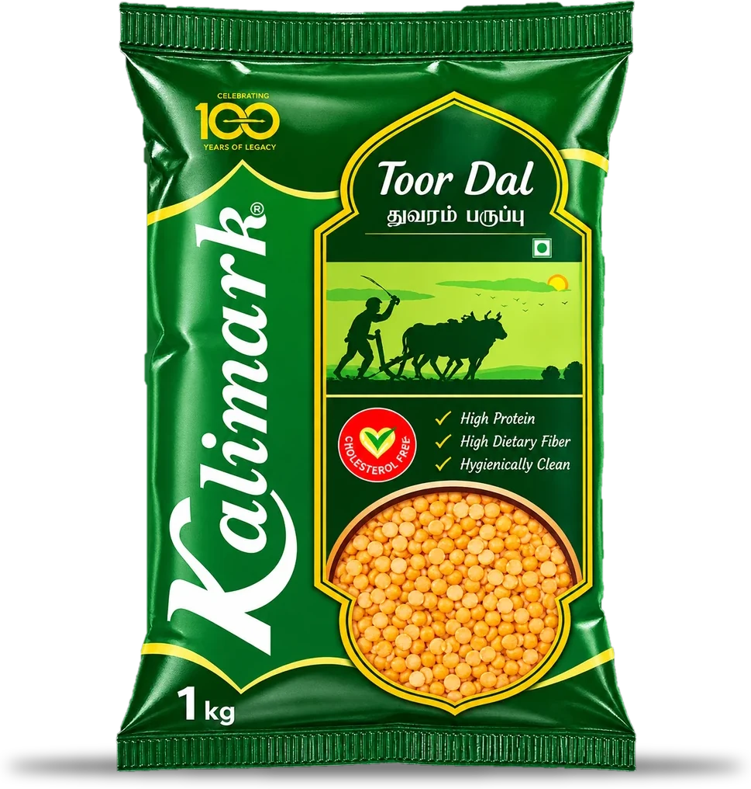
Kalimark Foods · 1 kgKalimark Toor Dal is rich in protein, fibre and essential minerals like iron and calcium.
Sambar made with our Toor Dal has an authentic desi aroma and is easy to prepare.
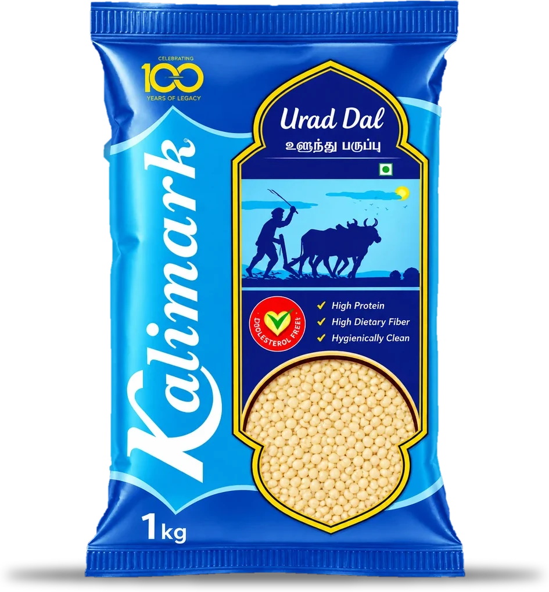
Kalimark Foods · 1 kgKalimark Urad Dal is a nutrient-dense legume and a staple of the South Indian kitchen. Added to idli rice, poha or rava, it makes a feast for your taste buds in the form of idli, dosa and more.
Stand out in taste when it's prepared as vada using Kalimark Sunflower Oil — a healthy combo and a delicious addition to a balanced diet.